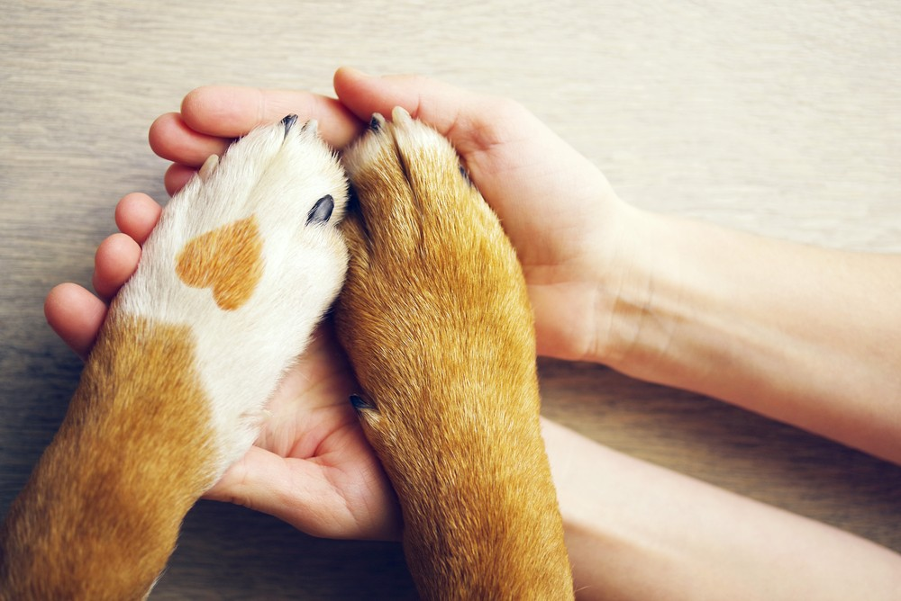

Toda vida de quatro patas merece um lugar para chamar de lar.
Há 9 anos resgatamos, cuidamos e encontramos famílias para animais abandonados, um focinho de cada vez.
Quero ajudarQuem somos
O Instituto Patas Que Acolhem nasceu em 2016, quando um grupo de amigos cansou de ver animais soltos e feridos nas ruas do bairro e decidiu fazer alguma coisa a respeito. Começamos com uma van emprestada e uma caixa de doações; hoje somos uma rede de mais de 150 voluntários, um abrigo temporário e dezenas de lares que abrem a porta para quem mais precisa.
Trabalhamos com resgate de animais em situação de rua, cuidados veterinários, campanhas de castração e um processo de adoção responsável, sempre com acompanhamento antes e depois da adoção. Porque adotar é um compromisso, não um impulso.

Resgate com respeito
Cada resgate é feito com calma e técnica, respeitando o medo e o tempo de cada animal.
Adoção responsável
Toda adoção passa por entrevista e acompanhamento, para que o novo lar seja definitivo.
Transparência
Prestamos contas de cada doação recebida e do destino de cada recurso arrecadado.
Nossos projetos
Resgate de Rua
Equipe de plantão que atende chamados de animais feridos, doentes ou abandonados em vias públicas. Já são mais de 900 resgates realizados.
Lar Temporário
Rede de voluntários que hospedam animais resgatados até a adoção definitiva, evitando a superlotação do abrigo físico.
Feira de Adoção
Eventos mensais que já conectaram mais de 600 animais a novas famílias, sempre com entrevista prévia e contrato de adoção responsável.
Educação e Castração
Campanhas gratuitas de castração e palestras sobre posse responsável em escolas e associações de bairro.
Impacto em números
Vozes que ganharam um novo lar
"Adotei a Mel há dois anos e ela virou a razão de eu acordar mais cedo pra passear. Foi a melhor decisão da minha vida."
— Renata, adotante da cadela Mel
"Ser lar temporário mudou minha rotina, mas também mudou minha forma de ver o mundo. Já acolhi seis cachorros até hoje."
— Diego, voluntário de lar temporário
"A equipe me acompanhou em todo o processo de adoção do Tico. Hoje ele dorme aos meus pés todas as noites."
— Fábio, adotante do gato Tico
Faça parte dessa matilha
Toda ajuda importa — uma doação, um fim de semana como voluntário, ou simplesmente compartilhar um animal para adoção. Fale com a gente.
contato@patasqueacolhem.org.br
(11) 4003-7715
Rua dos Girassóis, 88 — Bairro Vila Nova, São Paulo/SP